조건과 반복
5강 영상에서 배운 내용을 읽기 쉽게 정리했어요. 코드의 결과는 모두 실제로 실행한 값이에요. 인쇄하거나 「PDF로 저장」하면 교재처럼 볼 수 있어요.
인쇄 창에서 여백은 「기본값」, 「머리글 및 바닥글」은 끄고 저장하면 쪽마다 여백과 채널 정보가 깔끔하게 들어가요.
01오늘의 핵심
02조건문이 왜 필요할까요
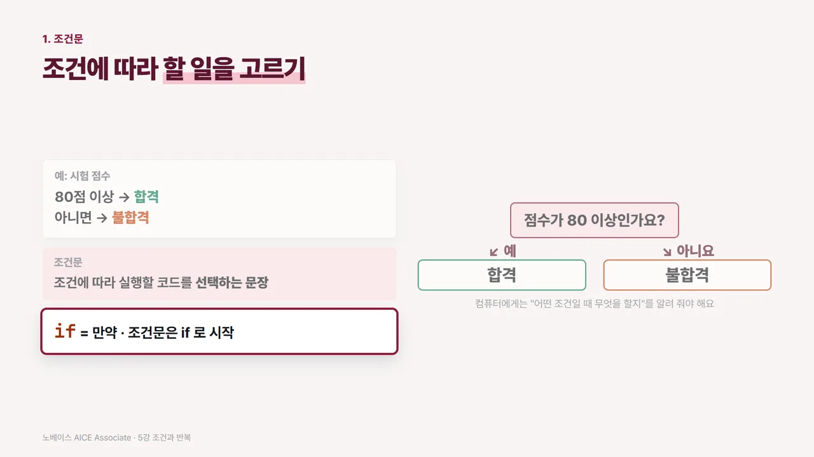
파이썬은 보통 코드를 위에서 아래로, 한 줄씩 차례대로 실행해요. 그런데 상황에 따라 어떤 줄은 건너뛰거나, 같은 줄을 여러 번 실행해야 할 때가 있어요.
시험 점수가 80점 이상이면 합격, 아니면 불합격이라고 해 볼게요. 사람은 점수를 보고 바로 판단하지만, 컴퓨터에게는 어떤 조건일 때 무엇을 할지 알려 줘야 해요. 이렇게 조건에 따라 실행할 코드를 선택하는 문장을 조건문이라고 불러요. 파이썬에서는 만약이라는 뜻의 영어 if 로 시작해요.
03조건문 만들기
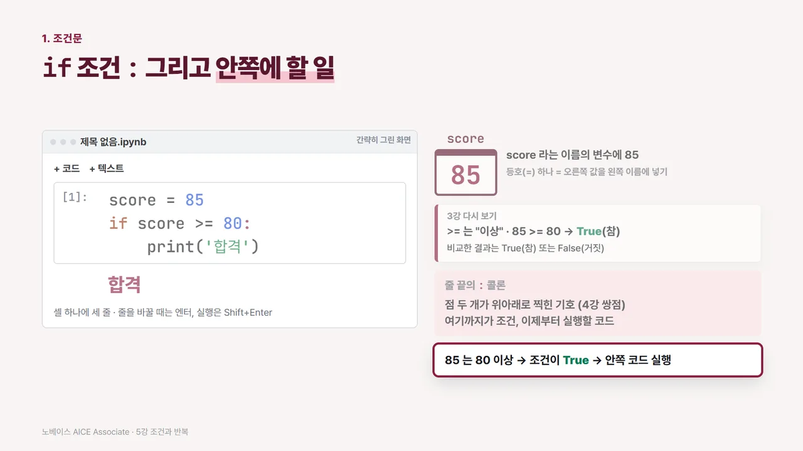
첫 줄은 score 라는 이름의 변수에 85 를 넣는 코드예요. 둘째 줄의 >= 는 3강에서 배운 "이상"이에요. 줄 끝에는 점 두 개가 위아래로 찍힌 기호, 즉 콜론 : 을 붙여요(4강 딕셔너리에서 본 쌍점과 같은 기호). 콜론은 여기까지가 조건이고, 이제부터 실행할 코드가 나온다는 표시예요.
score = 85
if score >= 80:
print('합격')04들여쓰기
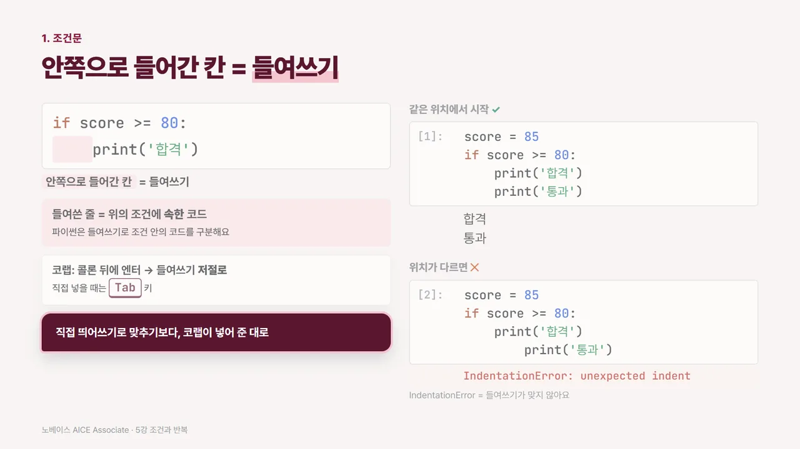
콜론 뒤의 줄이 안쪽에서 시작하는 것을 들여쓰기라고 불러요. 들여쓰기는 이 줄이 위의 조건에 속한다는 뜻이고, 파이썬은 들여쓰기로 어디까지가 조건 안의 코드인지 구분해요. 코랩에서는 콜론 뒤에 엔터를 누르면 들여쓰기가 저절로 들어가요. 직접 넣어야 할 때는 Tab 키를 눌러요.
한 조건 안에 있는 줄들은 모두 같은 위치에서 시작해야 해요.
score = 85
if score >= 80:
print('합격')
print('통과')score = 85
if score >= 80:
print('합격')
print('통과')05맞지 않으면 else
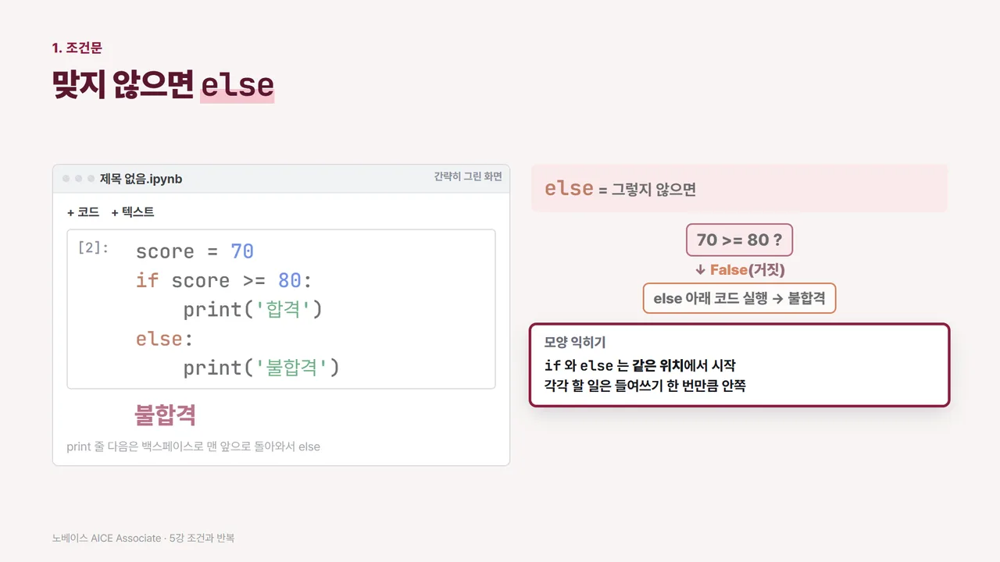
else 는 "그렇지 않으면"이라는 뜻이에요. print 줄 다음에서 백스페이스로 맨 앞으로 돌아와 else 와 콜론을 입력해요.
score = 70
if score >= 80:
print('합격')
else:
print('불합격')06콜론을 빠뜨리면
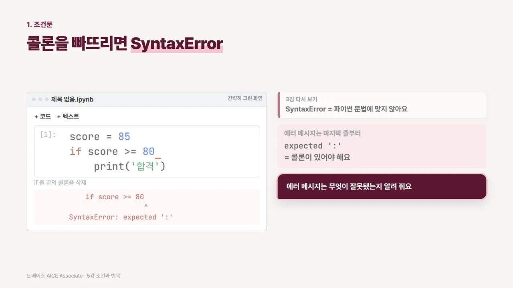
if 줄 끝의 콜론을 지우고 실행하면 SyntaxError, 즉 파이썬 문법에 맞지 않는다는 에러가 나요(3강).
score = 85
if score >= 80
print('합격')07조건 두 개: and · or
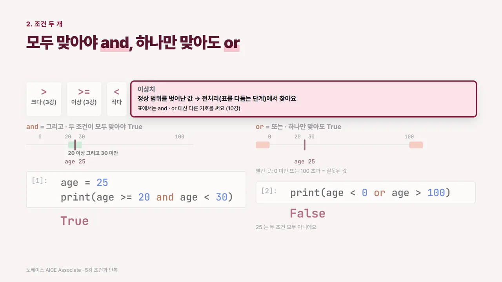
3강에서는 크다(>)와 이상(>=)을 배웠어요. 작다는 왼쪽이 뾰족한 부등호 < 를 써요.
두 조건이 모두 맞아야 할 때는 "그리고"라는 뜻의 and 를 두 조건 사이에 써요. 나이가 20 이상이면서 30보다 작은지 물어볼게요.
age = 25 print(age >= 20 and age < 30)
두 조건 중 하나만 맞아도 될 때는 "또는"이라는 뜻의 or 를 써요. 나이가 0보다 작거나 100보다 크면 잘못된 값이라고 해 볼게요.
print(age < 0 or age > 100)
08반복문이 왜 필요할까요
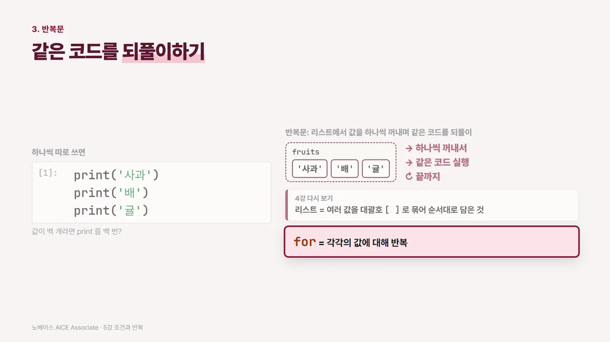
과일 이름 세 개를 하나씩 화면에 보여 주고 싶다면 print 를 세 번 쓸 수도 있지만, 값이 백 개라면 백 번 써야 해요.
print('사과')
print('배')
print('귤')이럴 때 반복문을 써요. 반복문은 리스트(4강: 여러 값을 대괄호로 묶어 순서대로 담은 것)에 있는 값을 하나씩 꺼내면서 같은 코드를 되풀이할 수 있어요. 파이썬에서는 for 로 시작해요. 여기서 for 는 각각의 값에 대해 반복한다는 의미로 이해하면 돼요.
09반복문 만들기
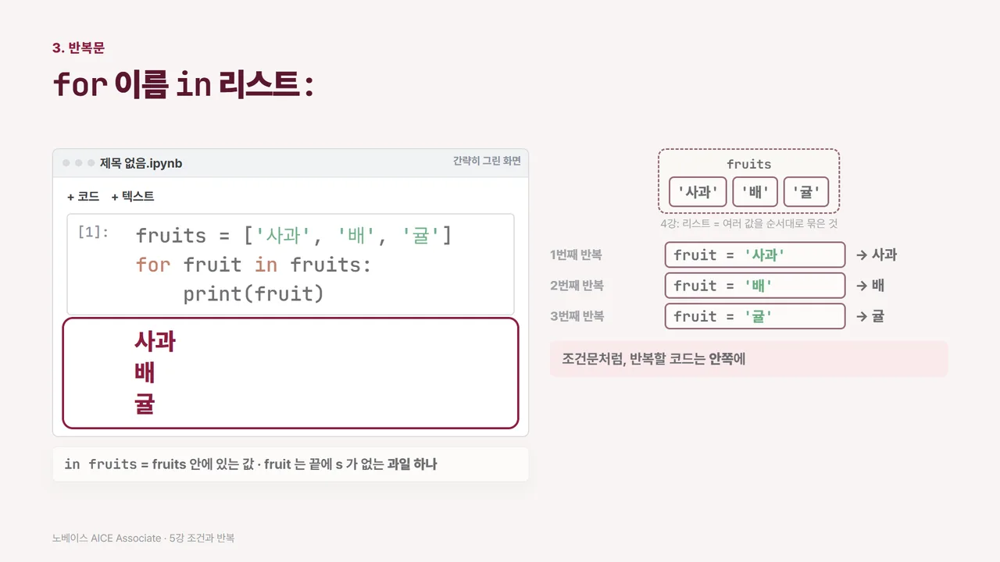
for fruit in fruits: 는 fruits 에 들어 있는 값을 하나씩 꺼내 fruit 라는 이름에 담으면서 반복하라는 뜻이에요. fruit 는 끝에 s 가 없는, 과일 하나라는 뜻이에요. in 은 "fruits 안에 있는 값"이라는 의미로 이해하면 돼요. 조건문처럼 반복할 코드는 안쪽에 써요.
fruits = ['사과', '배', '귤']
for fruit in fruits:
print(fruit)10정해진 횟수만큼: range
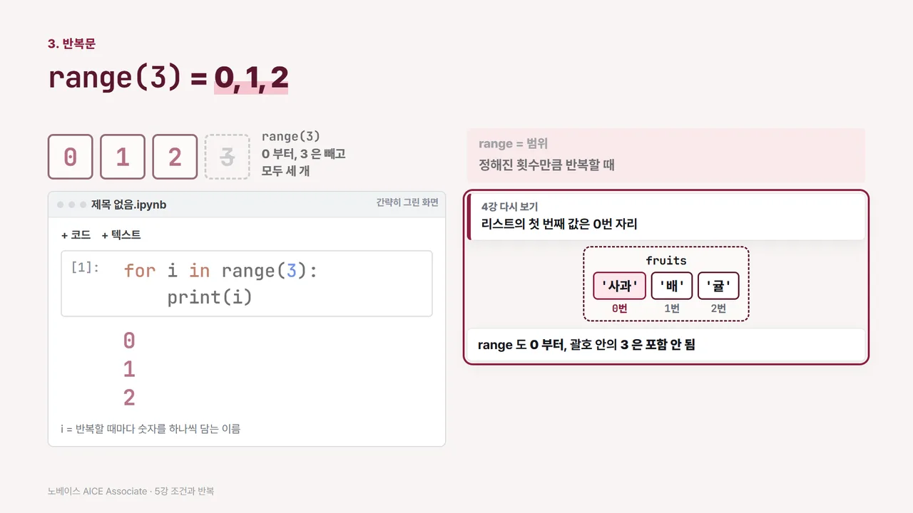
정해진 횟수만큼 반복할 때는 범위라는 뜻의 range 함수를 써요. range 괄호 안에 3 을 넣으면 숫자 세 개를 차례대로 만들어 줘요. i 는 반복할 때마다 숫자를 하나씩 담는 이름이에요.
for i in range(3):
print(i)11반복문으로 합계 구하기
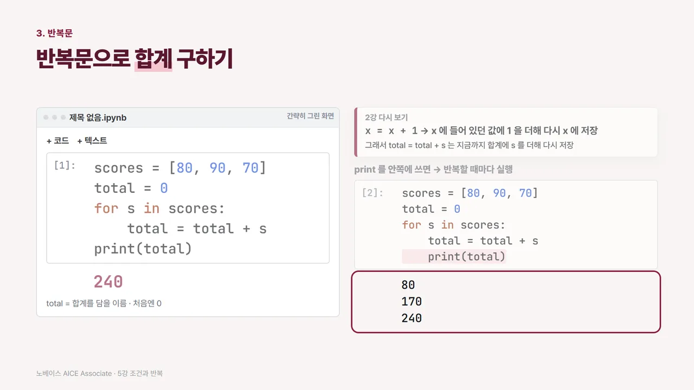
합계를 담을 total 에는 처음에 0 을 넣어요. 아직 아무것도 더하지 않았으니까요. total = total + s 는 2강의 x = x + 1 처럼, 지금까지의 합계에 s 를 더해서 다시 저장하라는 뜻이에요.
scores = [80, 90, 70]
total = 0
for s in scores:
total = total + s
print(total)마지막 print 를 안쪽에 쓰면 반복할 때마다 실행돼요. 그래서 중간 합계도 먼저 나와요.
scores = [80, 90, 70]
total = 0
for s in scores:
total = total + s
print(total)12조건문 + 반복문
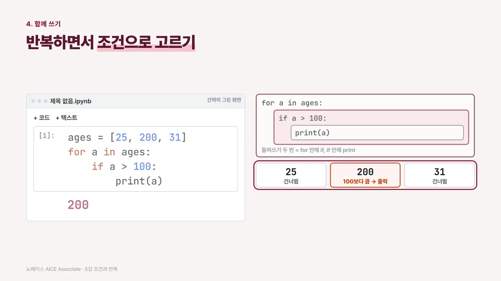
나이 목록에서 이상치만 찾아볼게요. for 안쪽에 if 가 있고, if 안쪽에 print 가 있어서 들여쓰기가 두 번 들어가요.
ages = [25, 200, 31]
for a in ages:
if a > 100:
print(a)13스스로 확인하기
- x 가 5 일 때, x 가 10 이상이면 큼, 아니면 작음을 보여 주는 코드의 결과는? (정답: 작음, 5 는 10 이상이 아니라 else 쪽)
- range 괄호 안에 4 를 넣고 반복하며 숫자를 보여 주면 마지막 숫자는? (정답: 3, 0부터 숫자 네 개)